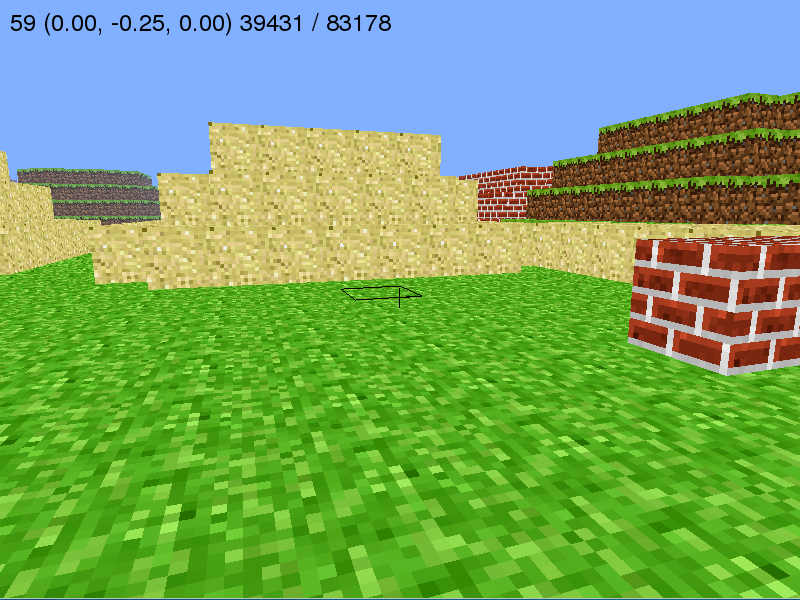

This mode is much more of a hands off approach. You have to be motivated and willing to explore. The tools you have access to can do anything, it's just a matter of experimenting. So let's get started!
To run the game, you need Python 2.7 (not 3 or above), Pyglet, and of course, the actual game itself. The Github page for the code documents the installation process, but I will outline how to do this.
If on Windows, then download and Install Python 2.7 from the Python releases page . If you're on Mac or Linux, then you likely already have Python installed, but could download it either from that page or your package manager.
Pip is a Python package manager, and is the easiest way to
get Pyglet on any system. For Windows,
install
from here , and then install Pyglet. For Macs, go to the
terminal and execute the following command: sudo
easy_install pip && pip install pyglet. For Linux,
install pip with your package manager of choice, and
then pip install pyglet, just as it's done on the
Mac.
The Github page for the project has a very extensive set of instructions that can help if you get lost at the other steps, and outlines what the project is. To get the source code, it is highly recommended that you use git. Git is a version control system that allows you to edit code and save progress in increments, allowing you to undo any mistakes that you make over time, and build of other projects. Source control is an absolute necessity for any project, so you might as well start learning it now if you haven't. Here is a fantastic 15 minute interactive tutorial, but if you really don't care, then here's a zip file with all of the code.
To run the game, first open up a terminal and go to the directory where the source code is located. This is wherever you cloned the repository, or unzipped the code. The directory contains the following four files:
Once in the directory, execute the following command to start
running the game: python main.py. If the
terminal outputs the following:
Traceback (most recent call last):
File "main.py", line 6, in <module>
from pyglet import image
File "/usr/lib/python3.3/site-packages/pyglet/__init__.py", line 249
print '%s%s %s' % (indent, name, location)
Then that just means it's running Python3 by default. Instead
execute python2 main.py, and it should run
properly. Once the game runs, you should see a blank 800x600
blue window pop up on the screen for a few seconds, while it
generates the blocks for the world, and then you should be
able to move around! Here is what it looks like:

| Key | Action |
|---|---|
| W | Move forward |
| S | Move backward |
| A | Strafe left |
| D | Strafe right |
| Tab | Enter flying mode |
| Esc | Exit window and move mouse |
| Left Click | Remove block |
| Right Click | Add block |
| 0-3 | Switch block type |
Now that you actually have the game running on your
computer, the fun part starts! Modify the source code.
Absolutely everything that runs the game is in the
file main.py, and it is heavily commented and
outlined so that you can start to understand how it works. After
messing around in the game for a bit, start trying to
familiarize yourself with the source code and understand how it
works. Then start to modify it. Here are some suggestions:
The world that the game generates by default is kind of small and boring. See if you can make it larger. Try to make it more random. Maybe add a few structures. The code for generating the blocks begins on line 152.
There's only three blocks that you start with. So adding more is going to require modifying the textures file provided, and then extending the source code. Blocks in this version of minecraft aren't unique, they all behave the same but have a different texture. Try make blocks their own unique object, that can be extended. Look at the real Minecraft as an example. What makes blocks different, and what are their properties? Here's a few that come to mind:
The physics for the game are mainly controlled by several constants in the class. What happens when you mess around with these? How does the game change when you edit terminal velocity, gravity, etc.?
The game is rendered in real time through OpenGL, a language
that provides direct calls to the graphics card to do any sort
of visual operation quickly. Pretty much all video games take
advantage of OpenGL for any graphics intensive work. Look at
the methods of the class with the name draw, and
try to figure out how they work. OpenGL itself is an entirely
different language with it's own quirks, but you can probably
mess around and see how to get it to work. Try to draw the
article in another color, or maybe instead of having a rectangle
appear on the selected block, make that block glow brighter.
This is probably the most complex of anything suggested so far, because it requires a huge amount of extra work. Not only do you need to model how the different enemies would interact with the world through AI, but you also would have to animate the models for them. But if you did it, it would awesome. You might be able to look at Minecraft mods to find 3D models for various types of enemies, or you could just do something as simple as have a red flashing block that chases you around.